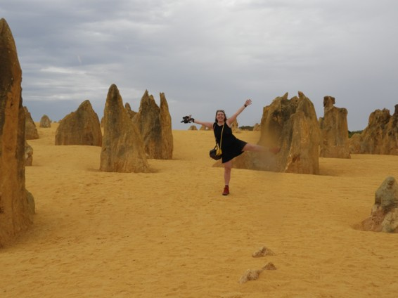

Lily A. Hardeveld
President, Secretary

About me:
I am Lily, I am currently an Earth Life and Climate master student and did my bachelors in Biology. I like to combine both fields and merge them into my favorite field: Paleontology! Everything about fossils interrestes me but during my studies I focussed on past ecosystems, microfosssils and Triassic Ostychtyes and Chondrichtyes fossils.
My role:
I am a board member since 2024. I started off as a content manager but since 2025 I function as the president and secretary as well.